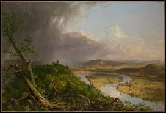

109. The Oxbow (View from Mount Holyoke, Northampton, Massachusetts, after a Thunderstorm). Thomas Cole. 1836 CE Oil on a Canvas.
- Form
- Actual view in Massachusetts
- Landscape divided into two clearly contrasting areas: the Romantic landscape on the left and the Classical landscape on the right
- On the right, man’s touch is light: cultivated fields, boats drifting down the river
- Function
- Painted as a reply to a British book that alleged that Americans had destroyed a wilderness with industry.
- Painted for an exhibit at the National Academy of Design; hence the unusually large size
- Context
- Illustrates the nineteenth-century American belief in Manifest Destiny
- Cole is the founder of the Hudson River School
- Cole’s self-portrait can be seen in the foreground in a dense forest
- The wild landscape includes broken trees and a storm: the sublime
- Cole at the center of the composition, between the two worlds expressed in the painting; challenges Americans to be good stewards of the land.